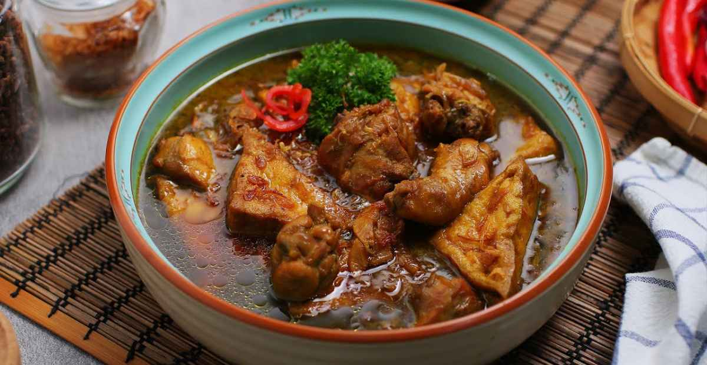

Semur
Semur adalah hidangan khas Indonesia yang kaya akan rempah dan memiliki cita rasa manis gurih. Meskipun banyak daerah memiliki variasi semur, hidangan ini secara umum dianggap sebagai masakan Indonesia. Semur populer di berbagai wilayah, termasuk Betawi, Jawa, dan Sumatera, dengan ciri khas masing-masing.
Bahan-bahan:
- 1 kg daging
- 2 batang sereh
- 2 lembar daun jeruk
- 3 lembar daun salam
- 2 ruas lengkuas
- 1 sdt penyedap
- 2 sdt kaldu bubuk
- 1 sdt gula pasir
- 1 pcs gula jawa
- 4 sdm kecap manis
- 1 buah tomat sedang, iris
- 600 ml air
Bumbu Halus:
- 1 sdm ketumbar bubuk
- 6 siung bawang merah
- 6 siung bawang putih
- 1 1/2 kemiri
- 1/2 sdt lada
- 1 ruas jahe
Cara Memasak:
- Tumis bumbu halus hingga matang, tambahkan tomat, masak hingga tomat layu lalu masukan daun jeruk, daun salam, sereh, lengkuas, aduk rata
- Kemudian tambahkan air, gula jawa, gula pasir, kaldu bubuk dan penyedap, masak hingga gula jawa larut kemudian masukan daging sapi dan tambahkan kecap manis. Aduk rata masak hingga daging empuk dan matang, cek rasa lalu sajikan